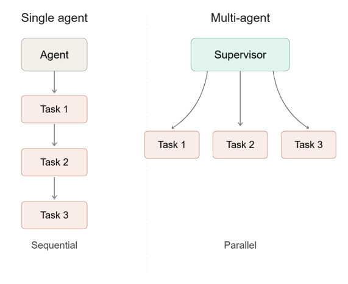

Multi-Agent Workflows#
In Session 2, you saw that Codex’s working file format changes the amount of tool work it has to do. You also saw that reusable instructions can make repeated workflows more consistent.
In this lesson, you will use Codex subagents to divide a dashboard data-preparation project into separate analysis tasks. The example continues with the Seattle Public Library checkout data. The goal is to prepare the data files that a dashboard can read.
A multi-agent workflow uses one main agent to coordinate the work and one or more additional agents to handle focused assignments. The main Codex session is the parent agent. A subagent is a separate agent run that receives a specific task from the parent, works in its own context, and returns findings, file changes, command output, or a summary.
{kind=link}

A single agent works through the tasks in sequence. In a multi-agent workflow, the parent agent acts like the supervisor: it divides the work into bounded assignments, then reviews the results before integrating them.#
Subagents are useful when a project can be divided into focused tasks that do not all require the same context at the same time. In analytics, those tasks might be separate analysis questions, separate validation checks, or separate parts of a dashboard build. In this lesson’s dashboard example, one subagent can work on annual digital vs. physical share, another can work on sampled title popularity, and another can work on material-type shares. Each worker owns an analysis task: the percent-cell Python script, the CSV files that script writes, and any notes needed to interpret those files.
Objectives#
explain what a parent agent and subagent are
use worker subagents to implement separate analysis tasks
explain why a smaller worker model can be appropriate for bounded work
specify machine-readable outputs for dashboard data preparation
review worker outputs before dashboard code depends on them
Why Use Subagents Here?#
A single Codex session can complete an entire analysis project. That is often the right choice when the task is small or when every step depends closely on the previous step.
The Seattle Library dashboard project has several analysis questions that can be developed separately:
How has digital vs. physical checkout share changed by year?
What was the most checked out sampled title each year?
What material types make up sampled digital and physical checkouts?
Those questions use related data, but they do not require one agent to hold every implementation detail at the same time. A parent agent can coordinate the project, while subagents handle focused pieces.
Codex supports subagents that are commonly used in focused roles:
Worker subagents implement a bounded task. They need a clear write scope and a verification command.
Checker subagents review outputs against a defined standard. They should usually be read-only.
Practical rule
Use worker subagents after the parent can describe the analysis task, source data, output file, and verification check.
Start With the Parent Agent#
The parent agent should begin with the project rules and the assignment frame. In this workflow, the data source is already documented, so the parent should read the project rules and the Seattle Public Library data notes directly before defining the worker tasks.
This lesson also changes the working artifact. Earlier work used a notebook. For the dashboard workflow, the analysis should move into percent-cell Python files so the scripts can be rerun and can write standalone, machine-readable CSV outputs.
The following box gives a prompt that you should give to a Codex session. You should start Codex in your student_setup folder, and can paste it in (cd analytics_accelerator/student_setup then start codex)
We are preparing data for a Seattle Public Library checkout dashboard.
Read @seattle-public-library/README.md.
For this lesson, move the analysis out of notebooks and into percent-cell
Python scripts that write dashboard-ready CSV files.
Do not edit files yet. First, summarize the project rules and the data context:
- what one row represents in each checkout file
- which source file supports each dashboard analysis
- which analyses use complete data or sampled data
- what caveats the worker prompts should preserve
Notice somethings about this prompt:
We tell Codex we want to use
.pyfiles instead of notebooks.We use the
@symbol to point to a particular file. This is a special command in Codex you can use to point to an existing project file.
The parent should extract rules like these:
raw data files must not be modified
accepted analysis belongs in percent-cell Python files
each analysis script should write machine-readable CSV files
each dashboard data file needs provenance
Launch Worker Subagents#
After the parent summarizes the data context, ask it to launch worker subagents for the separate analyses. You can describe the goal in plain text. The parent should use the documented data context to turn that goal into specific worker assignments.
The workers need to produce data that the dashboard can reuse. That means the analysis should be separate from the visualization: percent-cell Python scripts define the calculations and write standalone CSV files with predictable columns, then the dashboard reads those CSV files.
Why a machine-readable file?
A dashboard should read data from a file, not from a chat summary or a chart-specific calculation hidden in the visualization code. A standalone CSV gives the project a reusable handoff: the analysis script creates the data, the CSV stores the result in rows and columns, and the dashboard renders that reviewed result. The same file can also be inspected, tested, reused in another view, or shared with someone who does not need the dashboard code.
Using the data context you summarized, launch worker subagents using gpt-5.4-mini.
Each agent should output data in a machine-readable format.
Create separate workers to (1) calculate annual digital vs. physical checkout share, (2) identify the most checked out sampled titles by year, preserving all title metadata with total checkouts, and (3) calculate sampled material-type shares by year separately for digital and physical checkouts. Each worker should write percent-cell Python code and write the CSV files from that code. Each analysis that exists for both physical and digital should have separate files for physical and digital. There should be five output files - one for physical vs digital share by year, and two each for analysis (1) and (2).
After the agents are done, map the provenance of each file to scripts by documenting in a markdown file in the dashboard data directory including how to regenerate the data.
This prompt leaves the detailed decomposition to the parent. The parent should use the data documentation to decide which source files, grouping keys, output paths, caveats, and checks belong in each worker prompt. A worker assignment is ready when the parent can state the input data, the calculation, the output file, the expected columns, the provenance requirement, and the verification check.
The smaller model is appropriate here because the parent has already scoped the work. The gpt-5.4-mini workers are not discovering the project direction. They are executing bounded analysis tasks with source files, output expectations, and caveats supplied by the parent. Use a smaller worker model when the assignment has known inputs, known outputs, limited judgment calls, and a concrete verification command. Keep the parent or a stronger model responsible when the task still requires choosing the analysis strategy, resolving ambiguous data meaning, or making dashboard design tradeoffs.
Watch the Worker Threads#
While the workers are running, you can inspect what each subagent is doing. In Codex, type:
/agents
Codex will show the active agent threads. Pick one worker thread and open it. Read through the thread the same way you would read the main Codex conversation: check which files the worker inspected, what commands it ran, what assumptions it made, and whether it is writing the kind of CSV file the dashboard needs.
You do not need to manage every step inside the worker thread. The parent agent is still coordinating the workflow, and you still control what gets accepted into the project. Reading a worker thread gives you visibility into the analysis while it is happening, and it gives you a chance to notice a wrong source file, a missing caveat, or an output shape that will be hard for the dashboard to use. If you see one of those problems, ask the parent to revise the worker assignment or review the worker output before integrating it.
What to watch for
The parent should ask workers for two deliverables: the analysis script and the CSV files written by that script. A prose summary can explain the result, but the dashboard needs the standalone files.
Review the Worker Results#
When the workers finish, the parent agent should review the outputs before using them in dashboard code.
Ask:
Review the worker outputs before any dashboard code uses them.
For each analysis:
- list the script path
- list the CSV paths written by that script
- report row counts
- confirm expected columns
- summarize the provenance note
- state whether the output uses complete data or sampled data
- identify anything that needs revision before dashboard work begins
The parent review should check both mechanics and meaning.
For the annual share analysis:
each complete year has digital and physical rows
annual shares sum to 1.0 within each year
checkout totals are numeric and nonnegative
the output comes from complete monthly totals
For sampled title and material-type analyses:
the source file is a sample file
labels use “sampled” where needed
grouping keys match the dashboard question
the title output preserves title metadata and total checkout counts
material-type shares are calculated separately for digital and physical checkouts
ties are handled consistently
row counts are plausible
provenance notes state the source, method, and caveat
Use the Outputs in the Dashboard#
After review, the dashboard can read the CSV files written by the analysis scripts:
seattle-library-dashboard/
index.html
styles.css
app.js
README.md
data/
digital_physical_share_by_year.csv
most_popular_digital_titles_by_year.csv
most_popular_physical_titles_by_year.csv
digital_material_share_by_year.csv
physical_material_share_by_year.csv
The boundary is:
analysis scripts define each calculation
the scripts write CSV files
CSV files are the dashboard inputs
provenance notes explain how to interpret the CSV files
dashboard code renders the reviewed outputs
If a chart looks wrong, debug along that boundary. Check the analysis script, then the CSV it wrote, then the provenance note, then the dashboard rendering code.
Key points
The parent agent is the main Codex session coordinating the project.
A subagent is a separate agent run assigned to a bounded task.
Workers own separate analysis questions.
Each worker deliverable is the analysis script plus the CSV files that script writes.
gpt-5.4-minican be appropriate for worker tasks after the parent has tightly specified the contract.Machine-readable CSV files keep analysis outputs separate from visualization code and easier to reuse.
Dashboard inputs should be reviewed before dashboard code depends on them.